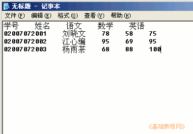
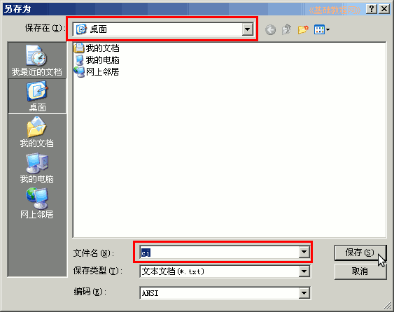
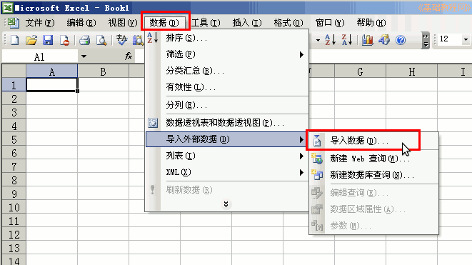
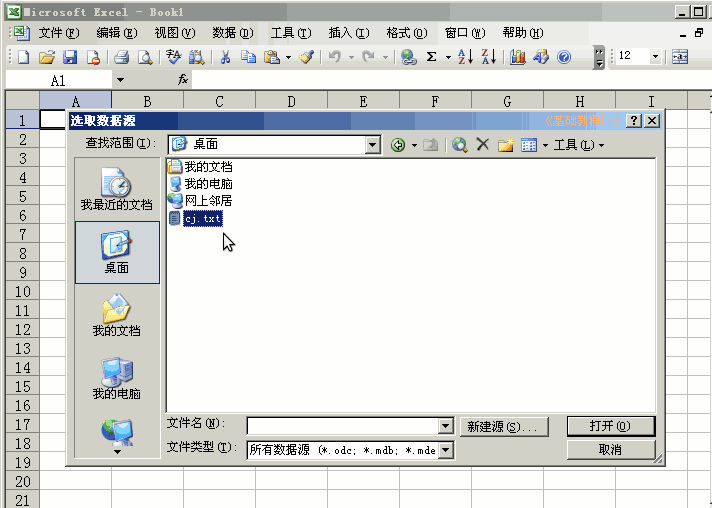
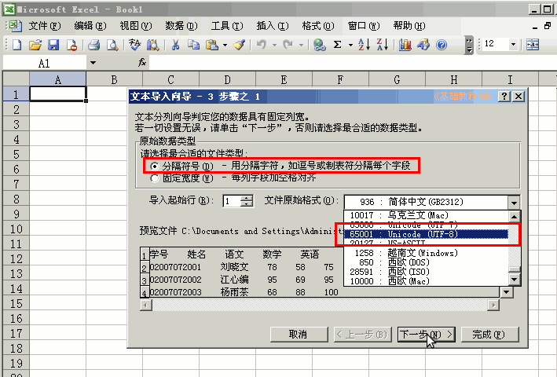
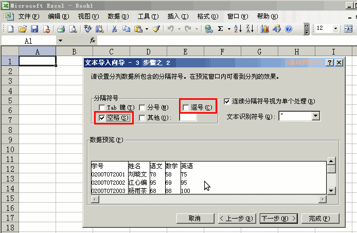
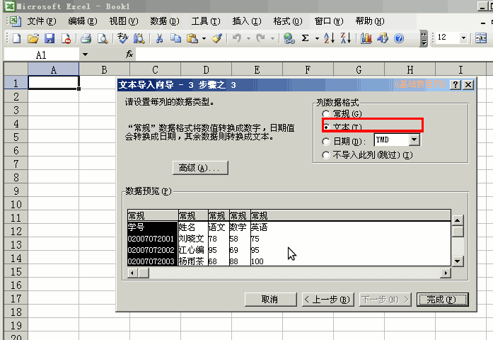
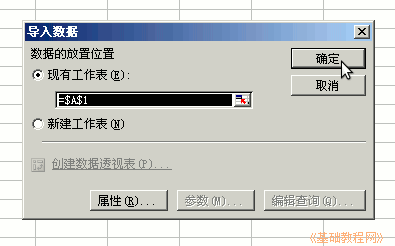
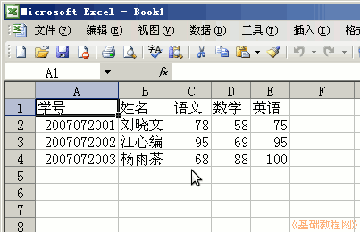

Excel 基础入门教程
二十五、导入文本文件 返回
txt或csv是文本格式文件的，可以通过数据导入菜单导入；
1、导入文本文件
1）制作文本文件，从网页或其他程序复制文本，然后粘贴到记事本或文本编辑器里；

2）记住保存的位置、文件名和文字编码，编码一般是ansi或utf8；

3）在excel中，点菜单“数据－导入外部数据－导入数据”；

4）在出来的选择对话框里，找到之前保存的文本文件，点击打开；

5）在出来的导入步骤1里，选择“分隔符号”，如果下面的预览是乱码，在右边选择UTF-8编码；

6）点下一步，选择分隔符号，一般是空格或逗号，下面的预览里可以看到分隔线；

7）点下一步，在数据类型里，检查预览里的数据，如果出错，则选中一列“常规”后，在右边选择对应的格式；

8）点“完成”，出来的放置位置里，选默认的“现有工作表”，点确定；

9）这时文本就导入到数据表中，保存一下文件；

本节学习了Excel中导入文本文件的方法，如果你成功地完成了练习，请继续学习下一课内容；
本教程由86团学校TeliuTe制作|著作权所有
基础教程网：http://teliute.org
美丽的校园……
|
|
|
|
|
|
转载和引用本站内容，请保留作者和本站链接。